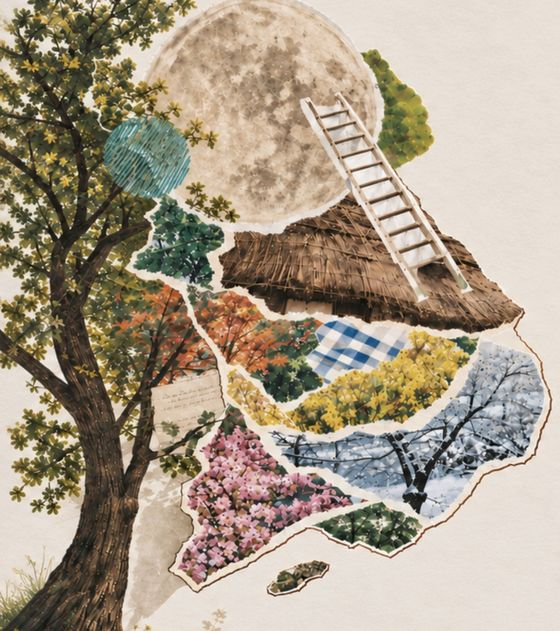

<!doctype html>
<html lang="ko">
<head>
<meta charset="utf-8">
<meta name="viewport" content="width=device-width, initial-scale=1">
<title>배우에게 한마디</title>
<link rel="preconnect" href="https://fonts.googleapis.com">
<link rel="preconnect" href="https://fonts.gstatic.com" crossorigin>
<link rel="stylesheet" href="https://fonts.googleapis.com/css2?family=East+Sea+Dokdo&family=Gowun+Dodum&display=swap">
<link rel="stylesheet" href="style.css">
</head>
<body>
<main id="app"></main>
<script src="https://cdn.jsdelivr.net/npm/@supabase/supabase-js@2.45.4/dist/umd/supabase.js"></script>
<script src="config.js"></script>
<script>
var C = window.CONFIG;
var sb = supabase.createClient(C.SUPABASE_URL, C.SUPABASE_ANON_KEY, { auth: { persistSession: false } });
var app = document.getElementById("app");
var n = parseInt(new URLSearchParams(location.search).get("a"), 10);
var actorName = C.ACTORS[n - 1];
function esc(s) { return String(s).replace(/[&<>"']/g, function (c) { return { "&": "&amp;", "<": "&lt;", ">": "&gt;", '"': "&quot;", "'": "&#39;" }[c]; }); }

function footer() {
  return '<div class="foot"><span><b>원작</b> 손턴 와일더 · <b>연출</b> 강채원 · <b>지도교수</b> 문경태</span>' +
    '<span>2026.11.24~11.28 · 서일대학교 예다움홀</span></div>';
}

if (!actorName) {
  var sorted = C.ACTORS.map(function (a, i) { return { name: a, no: i + 1 }; })
    .sort(function (x, y) { return x.name.localeCompare(y.name, "ko"); });
  app.innerHTML =
    '' +
    '<span class="stamp">연극</span>' +
    '<h1>배우에게<br><span class="hot">한마디</span></h1>' +
    '<p class="lede">〈' + esc(C.PLAY) + '〉의 배우에게 하고 싶은 말을 남겨주세요. 누구에게 건네고 싶으세요?</p>' +
    '<section class="card"><ul class="actors">' +
    sorted.map(function (a) { return '<li><a href="?a=' + a.no + '">' + esc(a.name) + '</a></li>'; }).join("") + '</ul></section>' + footer();
} else {
  start();
}

function start() {
  app.innerHTML =
    '<span class="stamp">TO</span>' +
    '<h1><span class="hot">' + esc(actorName) + '</span> <span class="nw">배우님께</span></h1>' +
    '<p class="lede">〈' + esc(C.PLAY) + '〉을 보러 와주셔서 고맙습니다. 하고 싶은 말을 남겨주세요.</p>' +
    '<section class="card" id="box">' +
    '<label for="txt">글로 남기기</label>' +
    '<textarea id="txt" maxlength="500" placeholder="그 장면이 오래 남았어요…"></textarea>' +
    '<label>목소리로 남기기 (최대 ' + C.MAX_SECONDS + '초)</label>' +
    '<div class="row"><button type="button" id="recbtn">녹음 시작</button><span class="timer" id="timer"></span></div>' +
    '<audio id="prev" controls hidden></audio>' +
    '<p class="note" id="recnote">첫마디는 &quot;' + esc(actorName) + ' 배우님께&quot;로 시작해 보세요.</p>' +
    '<div class="row"><button type="button" id="send">보내기</button></div>' +
    '<p class="status" id="st" role="status"></p>' +
    '<p class="note">보낸 메시지는 ' + esc(actorName) + ' 배우님만 마지막 공연 날 받아봅니다. 다른 관객은 들을 수 없습니다. 이 페이지 뒤에는 서버 하나와 스태프 몇 명이 있습니다. 공연 홍보에 사용될 수 있고, 마지막 공연 후 삭제됩니다.</p>' +
    '</section>';

  var st = document.getElementById("st"), recbtn = document.getElementById("recbtn"), timer = document.getElementById("timer");
  var prev = document.getElementById("prev"), send = document.getElementById("send");
  var blob = null, rec = null, stream = null, chunks = [], tick = null, t0 = 0;
  function say(t, err) { st.textContent = t; st.className = "status" + (err ? " err" : ""); }

  var canRec = !!(navigator.mediaDevices && navigator.mediaDevices.getUserMedia && window.MediaRecorder);
  if (!canRec) {
    recbtn.disabled = true;
    document.getElementById("recnote").textContent = "이 브라우저에서는 녹음이 안 돼요. 카카오톡 등 앱 안에서 열었다면 휴대폰 기본 브라우저(사파리, 크롬)로 열어주세요. 글은 그대로 보낼 수 있어요.";
  }
  function pickMime() {
    var c = ["audio/webm;codecs=opus", "audio/mp4", "audio/webm", "audio/ogg"];
    for (var i = 0; i < c.length; i++) if (MediaRecorder.isTypeSupported(c[i])) return c[i];
    return "";
  }
  function stopRec() { if (rec && rec.state !== "inactive") rec.stop(); }
  recbtn.addEventListener("click", async function () {
    if (rec && rec.state === "recording") { stopRec(); return; }
    try {
      stream = await navigator.mediaDevices.getUserMedia({ audio: true });
    } catch (e) { say("마이크를 쓸 수 없어요. 권한을 허용하거나 글로 남겨주세요.", true); return; }
    chunks = []; blob = null; prev.hidden = true; say("");
    var mime = pickMime();
    rec = new MediaRecorder(stream, mime ? { mimeType: mime } : undefined);
    rec.ondataavailable = function (e) { if (e.data && e.data.size) chunks.push(e.data); };
    rec.onstop = function () {
      clearInterval(tick); stream.getTracks().forEach(function (t) { t.stop(); });
      blob = new Blob(chunks, { type: rec.mimeType || mime || "audio/webm" });
      prev.src = URL.createObjectURL(blob); prev.hidden = false;
      recbtn.textContent = "다시 녹음"; recbtn.className = "";
    };
    rec.start(); t0 = Date.now();
    recbtn.textContent = "녹음 끝내기"; recbtn.className = "rec";
    tick = setInterval(function () {
      var s = Math.floor((Date.now() - t0) / 1000);
      timer.textContent = s + " / " + C.MAX_SECONDS + "초";
      if (s >= C.MAX_SECONDS) stopRec();
    }, 250);
  });

  send.addEventListener("click", async function () {
    var text = document.getElementById("txt").value.trim();
    if (rec && rec.state === "recording") stopRec();
    if (!text && !blob) { say("글이나 목소리 중 하나는 남겨주세요.", true); return; }
    send.disabled = true; recbtn.disabled = true; say("보내는 중…");
    try {
      var path = null;
      if (blob) {
        var type = (blob.type || "audio/webm").split(";")[0];
        var ext = type.indexOf("mp4") >= 0 ? "m4a" : type.indexOf("ogg") >= 0 ? "ogg" : "webm";
        var uid = (window.crypto && crypto.randomUUID) ? crypto.randomUUID() : String(Date.now()) + Math.random().toString(16).slice(2);
        path = n + "/" + uid + "." + ext;
        var up = await sb.storage.from("voices").upload(path, blob, { contentType: type });
        if (up.error) throw up.error;
      }
      var ins = await sb.from("messages").insert({ actor: n, body: text || null, audio_path: path });
      if (ins.error) throw ins.error;
      document.getElementById("box").innerHTML = '<h2>전달됐어요</h2><p>' + esc(actorName) + ' 배우님께 마음이 닿을 거예요. 고맙습니다.</p>' +
        '<p class="note">다른 배우에게도 말을 건네고 싶다면 <a href="index.html">다른 배우에게도 한마디 남기기</a></p>';
    } catch (e) {
      say("보내지 못했어요. 통신 상태를 확인하고 다시 눌러주세요.", true);
      send.disabled = false; recbtn.disabled = !canRec;
    }
  });
}
</script>
</body>
</html>
